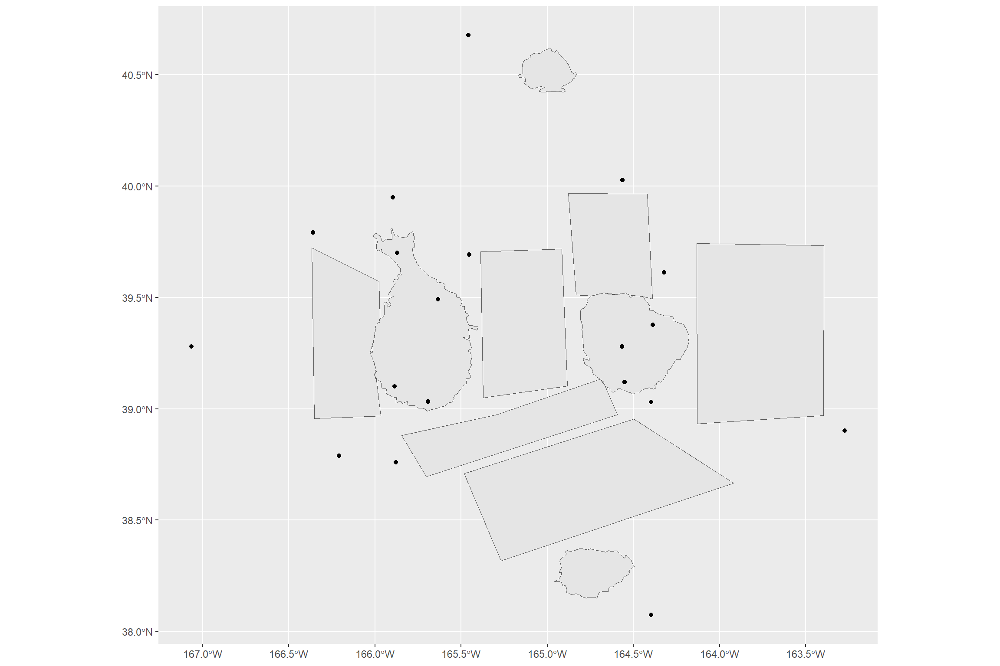
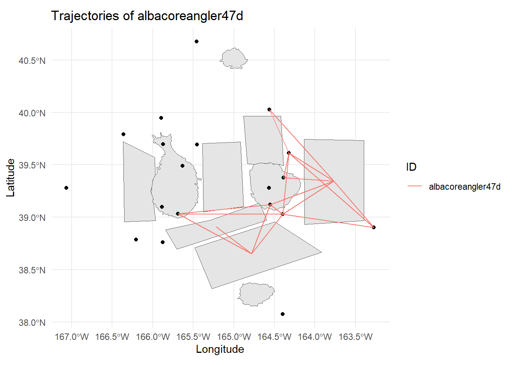

pacman::p_load(sf, tidyverse)Kickstarter 3: Working with Geographical Data
Overview
This kickstarter aims to provide you hands-on guide on how to work with geographical data. By the end of this hands-on exercise, you will be able to use appropriate functions of R packages to perform the following tasks:
- Importing geographical data in geojson file format into R,
- Importing geographical data in ESRI shapefile format into R, and
- Visualising sf tibble data.
Getting Started
For the purpose of this exercise, two R packages will be used. They are tidyverse and sf package.
In the code chunk below, p_load() of pacman package is used to load the R packages into R environemnt.
Importing Geographical Data in geojson format
In this section, you will learn how to import a Oceanus Geography.geojson provided for VAST Challenge 2024 MC2 into R by using sf package. GeoJSON is an open standard format designed for representing simple geographical features, along with their non-spatial attributes. It is based on the JSON format. To learn more about the data structure of geojson, you can refer to this wiki page.
In the code chunk below, st_read() of sf package is used to import a geographical file in geojson format into R.
OceanusGeography = st_read("data/OceanusGeography.geojson") %>%
st_transform(crs = 4326)Reading layer `OceanusGeography' from data source
`D:\tskam\ISSS608-AY2023-24Apr\VAST\data\OceanusGeography.geojson'
using driver `GeoJSON'
Simple feature collection with 29 features and 7 fields
Geometry type: GEOMETRY
Dimension: XY
Bounding box: xmin: -167.0654 ymin: 38.07452 xmax: -163.2723 ymax: 40.67775
Geodetic CRS: WGS 84Thing to learn from the code chunk above:
st_transform()is used to assign wgs84 (i.e. 4326) coordinates system to the output object.
The output R object (i.e.OceanusGeography) is an sf data.frame as shown below. Actually sf stand for simple feature.
class(OceanusGeography)[1] "sf" "data.frame"Next, glimpse() is used to display the structure of OceanusGeography sf data.frame.
glimpse(OceanusGeography)Rows: 29
Columns: 8
$ Name <chr> "Suna Island", "Thalassa Retreat", "Makara Shoal"…
$ Description <chr> "Large island of Oceanus", "Smaller island of Oce…
$ X.note <chr> "Suna is 'sand' or 'gritty' in Japanese", "Thalas…
$ type <chr> "Entity.Location.Region", "Entity.Location.Region…
$ X.Kind <chr> "Island", "Island", "Island", "Island", "Fishing …
$ Activities <list> "Residential", "Residential", "Recreation", <"To…
$ fish_species_present <list> <>, <>, <>, <>, <"Cod/Gadus n.specificatae", "Bi…
$ geometry <GEOMETRY [°]> MULTIPOLYGON (((-166.0111 3..., MULTIPOL…
Note
The geometry column indicate the simple feature geometry is multipolygon. However, if you examine the data.frame closely, you will notice that the geographical data are capture in polygon and point features.
Visualising Geographical Data with ggplot2
It is always a good practice to visualise the sf data.frame in a map.
In the code chunk below, geom_sf() of ggplot2 package is used to plot the sf data.frame in R.
ggplot(data = OceanusGeography) +
geom_sf()
Before we move on to next section, let’s save OceanusGeography into rds format for future use by using the code chunk below.
write_rds(OceanusGeography, "data/rds/OceanusGeography.rds")Importing Geographical Data in ESRI shapefile format
In the code chunk below, st_read() of sf package is used to import a geographical file in ESRI shapefile format into R.
OceanusLocations <- st_read(dsn = "data/shp",
layer = "Oceanus Geography")Reading layer `Oceanus Geography' from data source
`D:\tskam\ISSS608-AY2023-24Apr\VAST\data\shp' using driver `ESRI Shapefile'
Simple feature collection with 27 features and 7 fields
Geometry type: POINT
Dimension: XY
Bounding box: xmin: -167.0654 ymin: 38.07452 xmax: -163.2723 ymax: 40.67775
Geodetic CRS: WGS 84Next class() is used verify if the OceanusLocations is indeed in sf data.frame.
class(OceanusLocations)[1] "sf" "data.frame"Similarly, glimpse() is used to reveal the structure of OceanusLocation data.frame.
glimpse(OceanusLocations)Rows: 27
Columns: 8
$ Name <chr> "Haacklee", "Port Grove", "Lomark", "Himark", "Paackland", …
$ Descriptio <chr> NA, NA, NA, NA, NA, "Adimistrative seat of Oceanus", NA, NA…
$ X.note <chr> NA, NA, NA, NA, NA, NA, NA, NA, NA, NA, NA, NA, NA, NA, NA,…
$ Activities <chr> "Tourism,Local shipping", "Tourism,Research", "Deep sea fis…
$ type <chr> "Entity.Location.City", "Entity.Location.City", "Entity.Loc…
$ X.Kind <chr> "city", "city", "city", "city", "city", "city", "city", "bu…
$ fish_speci <chr> NA, NA, NA, NA, NA, NA, NA, NA, NA, NA, NA, NA, NA, NA, NA,…
$ geometry <POINT [°]> POINT (-165.6908 39.03215), POINT (-165.8855 39.10005…Similarly, we will visualise the geographical data by using geom_sf() of ggplot2 as shown in the code chunk below.
ggplot(data = OceanusLocations) +
geom_sf()
Likewise, before we moving on to the next section, the code chunk below is used to save OceanusLocations into an rds file format.
write_rds(OceanusLocations,
"data/rds/OceanusLocations.rds")Importing Edges Data
Now it is time to bring mc2_edges.rds into R.
mc2_edges <- read_rds("data/rds/mc2_edges.rds")Next, unique() is used list the unique classes in event3 column of mc2_edges data.frame.
unique(mc2_edges$event3)[1] "TransponderPing" NA The output above shows that there are two unique classes in the event3. They are: TransponderPing and NA.
The code chunk below is used to extract vessel movement data from mc2_edges.
Note
Things to learn from the code chunk below:
filter()is used to select records with event3 is TransponderPing, andselect()is used to fields that are needed to be saved
vessel_movement_data <- mc2_edges %>%
filter(event3 == "TransponderPing") %>%
select(time, dwell, source, target)Next, unique() is used to list unique classes in source field.
unique(vessel_movement_data$source) [1] "City of Haacklee" "City of Lomark"
[3] "City of Himark" "City of Paackland"
[5] "City of South Paackland" "City of Port Grove"
[7] "Exit West" "Nav 3"
[9] "Nav D" "Nav B"
[11] "Nav A" "Nav C"
[13] "Nav 2" "Nav 1"
[15] "Exit East" "Exit South"
[17] "Exit North" "Nav E"
[19] "Cod Table" "Ghoti Preserve"
[21] "Wrasse Beds" "Nemo Reef"
[23] "Don Limpet Preserve" "Tuna Shelf" as well as OceanusLocation.
unique(OceanusLocations$Name) [1] "Haacklee" "Port Grove" "Lomark"
[4] "Himark" "Paackland" "Centralia"
[7] "South Paackland" "Exit West" "Nav 3"
[10] "Nav D" "Nav B" "Nav A"
[13] "Nav C" "Nav 2" "Nav 1"
[16] "Exit East" "Exit South" "Exit North"
[19] "Nav E" "Don Limpet Preserve" "Tuna Shelf"
[22] "Makara Shoal" "Silent Sanctuary" "Cod Table"
[25] "Ghoti Preserve" "Wrasse Beds" "Nemo Reef" Because later we are going to append the coordinates values from OceanusLocations to vessel_movement_data, it is every important for us to ensure that the class values in source field of vessel_movement_data is similar to Name field of OceanusLocations.
In the code chunk below, gsub() is used to remove City of from source column. At the same time, gsub() is used to exclude the extra white space in from of the words.
vessel_movement_data <- vessel_movement_data%>%
mutate(source = gsub("^City of", "", source)) %>%
mutate(source = gsub("^\\s+", "", source))Notice that the words City of have been remove from all records in source field as shown below.
unique(vessel_movement_data$source) [1] "Haacklee" "Lomark" "Himark"
[4] "Paackland" "South Paackland" "Port Grove"
[7] "Exit West" "Nav 3" "Nav D"
[10] "Nav B" "Nav A" "Nav C"
[13] "Nav 2" "Nav 1" "Exit East"
[16] "Exit South" "Exit North" "Nav E"
[19] "Cod Table" "Ghoti Preserve" "Wrasse Beds"
[22] "Nemo Reef" "Don Limpet Preserve" "Tuna Shelf" Further Data Wrangling
In the code chunk below, st_coordinate() of sf package is used to extract coordinates from OceanusLocations sf data.frame.
coords <- st_coordinates(OceanusLocations)Next, code chunk below is used to drop the geometry column of OceanusLocations of sf data.frame by using st_drop_geometry() of sf package and save the output into a new data.frame called OceanusLocations_df.
OceanusLocations_df <- OceanusLocations %>%
st_drop_geometry()Then, the code chunk below is to append the x- and y-coodinate values from coords list into the XCOORD and YCOORD columns of OceanusLocations_df respectively.
OceanusLocations_df$XCOORD <- coords[, "X"]
OceanusLocations_df$YCOORD <- coords[, "Y"]In the code chunk below, class() is used to confirm that the output is indded a data.frame.
class(OceanusLocations_df)[1] "data.frame"Lastly, the code chunk below is used to tidy OceanusLocations_df by selecting the necessary columns only and at the same time, rename X.Kind to Loc_Type.
OceanusLocations_df <- OceanusLocations_df %>%
select(Name, X.Kind, XCOORD, YCOORD) %>%
rename(Loc_Type = X.Kind)In the code chunk below, left_join() of dplyr package is used to append columns in OceanusLocations_df data.frame to vessel_movement_data data.frame by using source and Name of OceanusLocations_df and vessel_movement_data data.frames respectively.
vessel_movement_data <- vessel_movement_data %>%
left_join(OceanusLocations_df,
by = c("source" = "Name"))Before moving on to the next section, remember to save vessel_movement_data data.frame.
write_rds(vessel_movement_data, "data/rds/vessel_movement_data.rds")Creating Vessel Trajectory Data
In this section, you will learn how to convert the vessel movement data into vessel trajectory data. A trajectory is a sequence of observations in time and space, for examples, the path formed by fishing vessels.
In the code chunk below, st_as_sf() of sf package is used to convert vessel_movement_data data.frame into sf point data.frame by using values in XCOORD and YCOORD columns. The output is an sf data.frame called vessel_movement_sf.
vessel_movement_sf <- vessel_movement_data %>%
st_as_sf(coords = c("XCOORD", "YCOORD"),
crs = 4326)Next arrange() is used to sort the records according to the vessels’ name (i.e. target) and navigation time (i.e. time)
vessel_movement_sf <- vessel_movement_sf %>%
arrange(target, time)Lastly, st_cast() of sf package is used to convert vessel_movement_sf from point features into linestring features called vessel_trajectory.
vessel_trajectory <- vessel_movement_sf %>%
group_by(target) %>%
summarize(do_union = FALSE) %>%
st_cast("LINESTRING")Visualising the Geo-Temporal Patterns of the Vessels
In this section, you will learn how to visualise the geo-temporal patterns of the vessels by using the newly created vessel trajectory data.
Assuming that we are interested to visualise the geo-temporal of vessel albacoreangler47d. The code chunk below is used to select the appropriate data records.
vessel_trajectory_selected <- vessel_trajectory %>%
filter(target == "albacoreangler47d")Next, appropriate functions of ggplot2 is used to plot the selected vessel trajectories by using the code chunk below.
ggplot() +
geom_sf(data = OceanusGeography) +
geom_sf(data = vessel_trajectory_selected,
aes(color = factor(target)),
size = 1) +
theme_minimal() +
labs(title = "Trajectories of albacoreangler47d",
x = "Longitude", y = "Latitude", color = "ID")